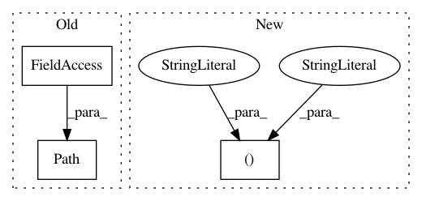

a92a4a9a118b58dcfc94840e8b5e0d517acf311d,pynets/nodemaker.py,,WB_fetch_nodes_and_labels,#Any#Any#Any#Any#Any#,388
Before Change
label_names = dict_df["Region"].tolist()
else:
try:
ref_txt = "%s%s%s%s" % (str(Path(__file__).parent), "/labelcharts/", atlas_select, ".txt")
if os.path.exists(ref_txt):
dict_df = pd.read_csv(ref_txt, sep=" ", header=None, names=["Index", "Region"])
label_names = dict_df["Region"].tolist()
After Change
label_names = dict_df["Region"].tolist()
else:
try:
ref_txt = "%s%s%s" % ("/Users/PSYC-dap3463/Applications/PyNets/pynets/labelcharts/", atlas_select, ".txt")
//ref_txt = "%s%s%s%s" % (str(Path(__file__).parent), "/labelcharts/", atlas_select, ".txt")
if os.path.exists(ref_txt):
dict_df = pd.read_csv(ref_txt, sep=" ", header=None, names=["Index", "Region"])
label_names = dict_df["Region"].tolist()
In pattern: SUPERPATTERN
Frequency: 4
Non-data size: 3
Instances
Project Name: dPys/PyNets
Commit Name: a92a4a9a118b58dcfc94840e8b5e0d517acf311d
Time: 2018-06-25
Author: dpisner@utexas.edu
File Name: pynets/nodemaker.py
Class Name:
Method Name: WB_fetch_nodes_and_labels
Project Name: catalyst-cooperative/pudl
Commit Name: a4ccf7b2aab0deacd0d81c1d3fad6b5fc5eed347
Time: 2019-09-30
Author: cgosnell@catalyst.coop
File Name: src/pudl/convert/epacems_to_parquet.py
Class Name:
Method Name: main
Project Name: catalyst-cooperative/pudl
Commit Name: 7301131fa2c41f56a647ea8ac8f474ec6a6e8b14
Time: 2019-09-30
Author: cgosnell@catalyst.coop
File Name: src/pudl/convert/epacems_to_parquet.py
Class Name:
Method Name: main
Project Name: dPys/PyNets
Commit Name: a92a4a9a118b58dcfc94840e8b5e0d517acf311d
Time: 2018-06-25
Author: dpisner@utexas.edu
File Name: pynets/nodemaker.py
Class Name:
Method Name: RSN_fetch_nodes_and_labels